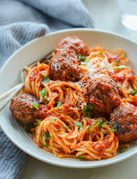
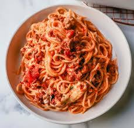
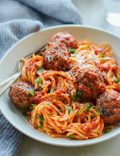
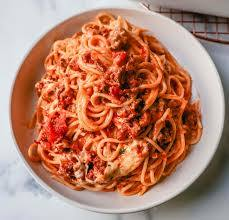

Recipes
Spaghetti

Spaghetti is a long, thin, solid, cylindrical pasta. It is a staple food of traditional Italian cuisine.
Origin: Italian
Source: Own Recipe
Category: Main Dish
Recipe Ingredients
- Dry spaghetti noodles
- Pasta sauce
- Cheese
Recipe Steps
- In a pan, add the pasta sauce and just enough water to cover the bottom of the pan. Bring the mixture to a boil.
- Add the spaghetti noodles to the pan and cook according to the packaging instructions
- Once the noodles are cooked, plate on a pan and add cheese on top
Additional Food Images
 



BLAT Sandwich

A BLAT sandwich is a delicious twist on the classic BLT, featuring crispy bacon, fresh lettuce, ripe tomatoes, and creamy avocado, all sandwiched between slices of bread for a satisfying blend of flavors and textures.
Origin: American
Source: My Recipe
Category: Main
Recipe Ingredients
- Avocado
- Bacon
- Lettuce
- Tomato
- Bread
- Mayo
Recipe Steps
- Toasted bread slice spread with mayo
- Put sliced avocado, bacons, sliced tomatoes, lettuce on one spread of bread
- Put the other slice of bread at the top
Additional Food Images


Guacamole

Guacamole is a Mexican dip made from mashed avocados, tomatoes, onions, cilantro, lime juice, and chili pepper, creating a creamy, zesty, and versatile condiment often enjoyed with tortilla chips, tacos, and more.
Origin: Mexican
Source: My Recipe
Category: Appetizer
Recipe Ingredients
- Avocado
- Lime
- Salt
- Onion
- Tomato
- Cilantro
Recipe Steps
- Slice three ripe avocados in half
- Scoop them into a mixing bowl
- Use a fork to gently mash them
- Add the onions, tomatoes, cilantro, jalapeno pepper, garlic, lime juice and salt and stir everything together.
Additional Food Images